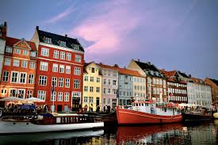
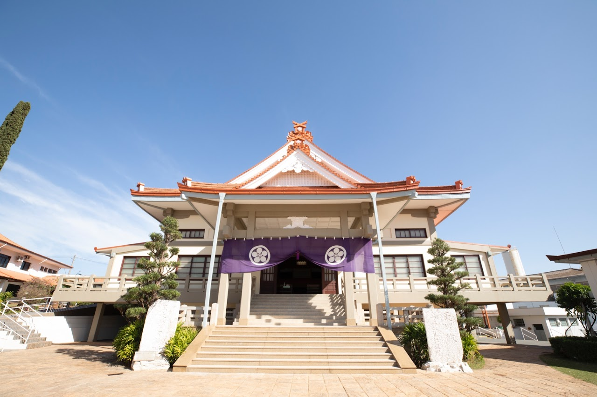

- Calistenia

- Desfrutar a natureza

- Estudar

Oi! Me chamo João, sou da cidade de Manaus(AM), tenho 23 anos e recentemente iniciei minha graduação em Engenharia de Software na Uninter. Estou entusiasmado para adquirir habilidades em desenvolvimento de software e aprofundar meus conhecimentos no universo da Tecnologia da Informação. Além disso, sou apaixonado por marketing digital, o que me levou a atuar como Gestor de Tráfego. Algo que me desperta grande curiosidade é entender como posso integrar essa experiência com minha formação em TI, explorando sinergias entre programação, automação e estratégias de marketing digital.
| Países | Fotografias |
|---|---|
| Dinamarca |  |
| Japão |  |
| Estados Unidos | |
| Imagens meramente ilustrativas | |
Ainda não tive a oportunidade de viajar para o exterior, porém já tenho uma viagem marcada para
cidade de São Paulo(Bauru) para Igreja Tenrikyo Dendotyo com o intuito de aprender mais sobre a doutrina
dessa religião de
origem japonesa. Não é uma viagem internacional, ainda, mas será a primeira vez na vida que irei viajar para
um outra cidade sozinho e de avião,
então estou muito ansioso para desfrutar de todas essas novas experiências.
Se quiser conhecer mais sobre a Igreja Tenrikyo Dendotyo, confira o link a seguir para mais informações:

Dendotyo do Brasil